Companion site to the CWA Seismological Center talk for the EERI Learning From Earthquakes 2026 Travel Study Program in Taiwan.
Earthquake early warning is a race against the S wave
Taiwan's Central Weather Administration (CWA) catches the first, gentle P waves, estimates what is coming, and sends alerts that can outrun the damaging S waves. Explore how it works, how it got faster, where it fell short, and where it is heading.
2025 Dapu M6.4, seen from Tainan, 45 km from the epicenter
- 7.9CWA issues the alert, before the first P wave even reaches Tainan
- 9.4P wave arrives: weak shaking
- 16.5S wave arrives: strong shaking, 8.6 s after the alert
The race in one slider
Every earthquake sends out two body waves. P waves travel at about 6 to 7 km/s but shake gently. S waves follow at about 3.5 to 4 km/s and carry most of the damage. Stations near the epicenter catch the P wave, the system estimates location and magnitude, and the alert travels at network speed.
Your warning time is the S-wave arrival minus the moment the alert reaches you. Close to the epicenter that number drops to zero: the blind zone.
Arrival times use the observed 2025 Dapu travel-time curves (P ≈ 2.9 s + d/6.9 km/s, S ≈ 4.5 s + d/3.77 km/s). Alert times are the real first alerts of 2010 Jiaxian, 2016 Meinong and 2025 Dapu.
- P wave arrives
- Alert issued
- Alert reaches you
- S wave arrives
Alert simulator
Click anywhere on the map, or pick a past earthquake. Watch the P and S fronts spread, see when the alert goes out, and check which counties would get a phone alert.
Pick an earthquake
| County | Max intensity | Phone alert | Warning at county seat |
|---|
Teaching model, not an operational product: one attenuation curve (Chen et al., 2019) without station site factors; alert time = P travel time to the nearest land plus processing calibrated to the real 27.0, 12.0 and 7.9 s alerts; phone alerts follow CWA's rule (M > 5.0 and I > 3, or M > 6.5 and I > 2). Real alerts differ: the real Dapu first alert covered 19 counties.
Why Taiwan invests in early warning
The Philippine Sea Plate and the Eurasian Plate converge at 7 to 8 cm per year, and Taiwan sits in the collision zone. Off the east coast the Philippine Sea Plate dives northward under Eurasia; in the south, Eurasia dives eastward under the Philippine Sea Plate.
earthquakes recorded every day
clearly felt earthquakes every year
years between large, deadly earthquakes
Since 1900, seven earthquakes have each killed more than 100 people, including the 1935 Hsinchu–Taichung earthquake (3,279 deaths) and the 1999 Chi-Chi earthquake (2,415).
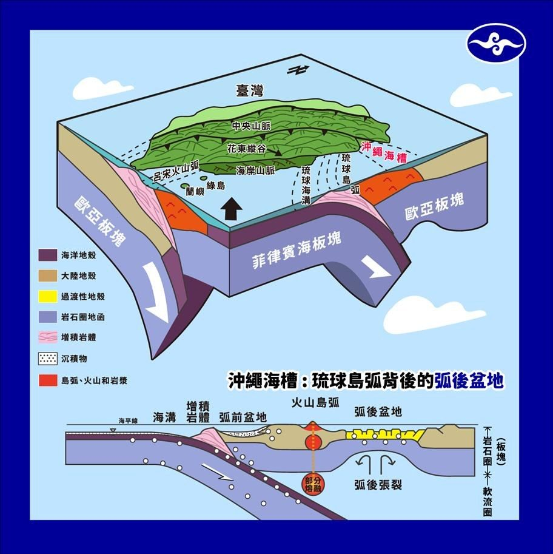
A decade of damaging earthquakes
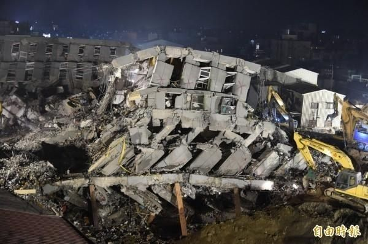
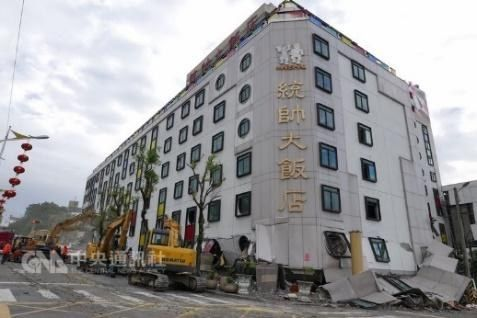
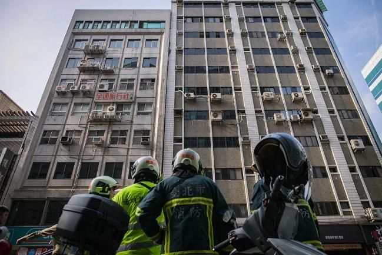
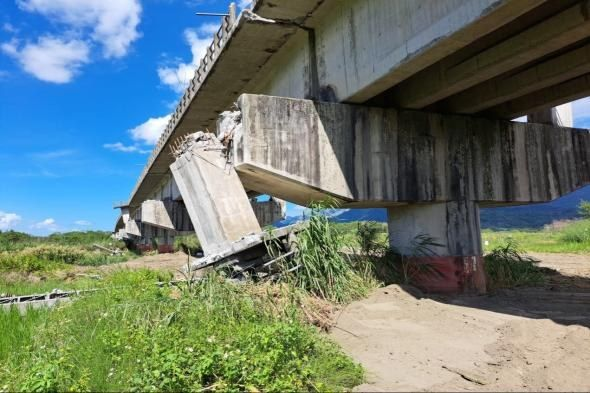
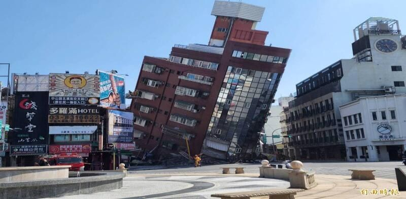
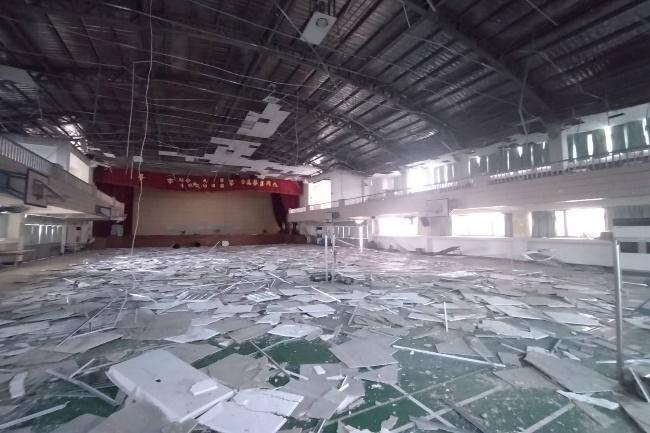
Casualties are deaths plus injuries. Intensities use CWA's scale, where levels 5 and 6 are split into minus and plus.
How the system works
From the first wiggle to a message on your phone, everything is automatic and updates as more stations report.
- 1Detect
Pick the P-wave arrival at each station: about 630 real-time stations and 3,000 channels.
- 2Associate
Group the picks that belong to the same earthquake.
- 3Locate
Find the epicenter with the effective-epicenter approach or Geiger's method.
- 4Size up
Estimate magnitude from the first seconds of P-wave displacement (Pd).
- 5Alert
Predict intensity for every county and send the alerts that meet the thresholds.
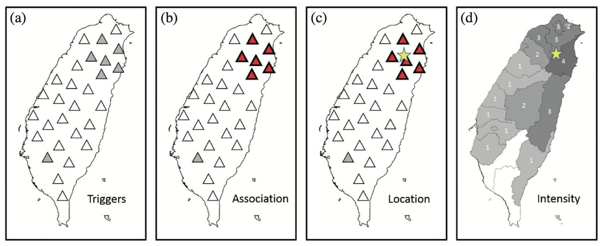
Be the algorithm: magnitude from Pd
Bigger earthquakes push the ground farther in the first seconds of the P wave. CWA's system turns that peak displacement, corrected for distance, into a magnitude.
Three ways the alert travels
| Channel | Who gets it and when | Delay |
|---|---|---|
| Phone alert (cell broadcast) | Every phone in counties where M > 5.0 and predicted intensity > 3, or M > 6.5 and intensity > 2 | 5.5 s |
| Television | On-screen alert when M > 5.0 and intensity > 2 | 10–20 s |
| Direct link | About 3,800 schools, disaster agencies, rail and metro operators, and 15 companies relaying to customers, when M > 4.5 and intensity > 2 | 0.8 s |
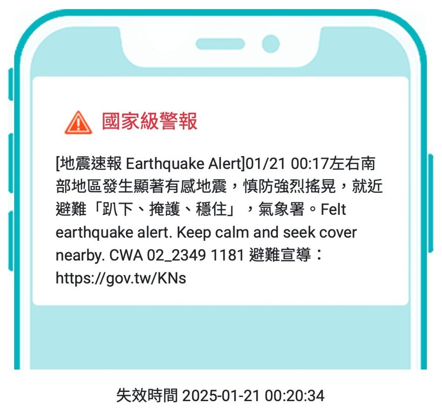
The real phone alert during the 2025 Dapu earthquake at 00:17: drop, cover and hold on, in Chinese and English. Every year on September 21 at 9:21 a.m., all phones receive a national drill alert in memory of Chi-Chi.
People and dashboards, 24/7
About 60 people work at the Seismological Center. A duty team of about ten covers every hour of the year, three per shift. Grafana dashboards show station health, data latency, ocean-bottom pressure gauges and whether each alert actually went out.
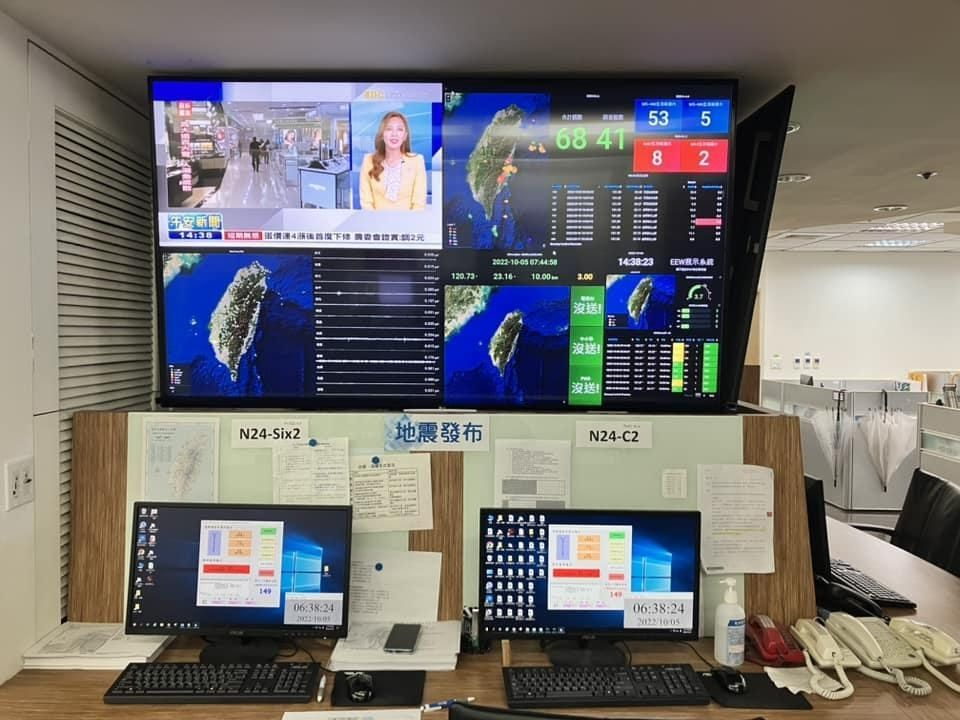
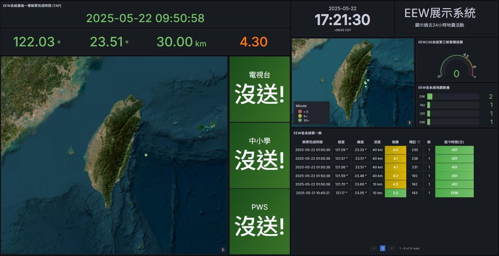
25 years of getting faster
- 1999102 s
Chi-Chi M7.3: automatic location, magnitude and shake map. No early warning yet.
- 201027.0 s
Jiaxian M6.3: first alert. Blind zone 86 km, 91 real-time stations.
- 201612.0 s
Meinong M6.6: blind zone 28 km, 149 stations.
- 202115 s
Offshore M5.3: cabled ocean-bottom stations cut the alert from 22 s.
- 202414 s
Hualien M7.2: final alert at 14 s, but the magnitude was underestimated and the north got no alert.
- 20257.9 s
Dapu M6.4: blind zone 12 km, 600+ strong-motion stations.
Time machine: watch the blind zone shrink
Same Dapu epicenter, three generations of the network. The red circle marks where strong shaking arrives before the alert.
- Alert time
- Blind zone
- Stations
- Measured in
The main driver of the speed-up is station density: the closer the nearest stations, the sooner there are enough P waves to act.
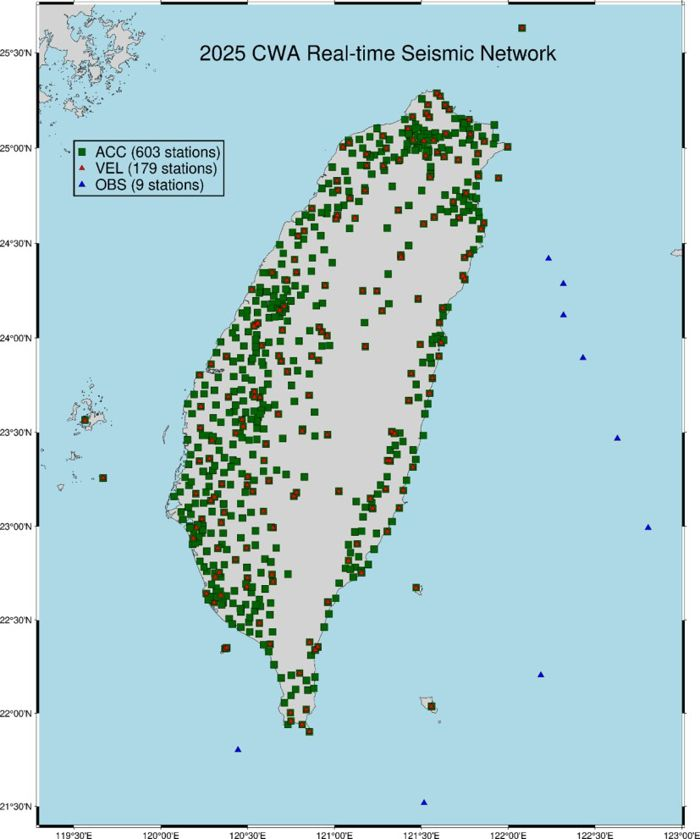
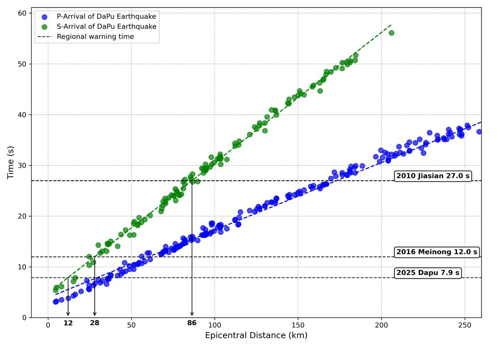
Case files
One success, one miss and one false alert. All three belong in the story.
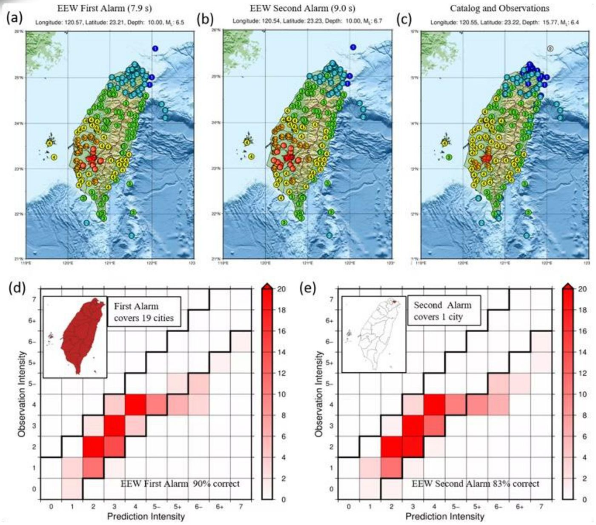
The system at its best
- When
- Jan 21, 2025, 00:17 local time
- Earthquake
- ML 6.4, depth 15.8 km, between Chiayi and Tainan
- First alert
- 7.9 s, estimated M6.5, 19 cities and counties
- Accuracy
- 90% of station intensities predicted correctly
- Second alert
- 9.0 s, estimated M6.7, one more county, 83% correct
- Blind zone
- About 12 km
- Impact
- Intensity 6−, 1,810 homes damaged
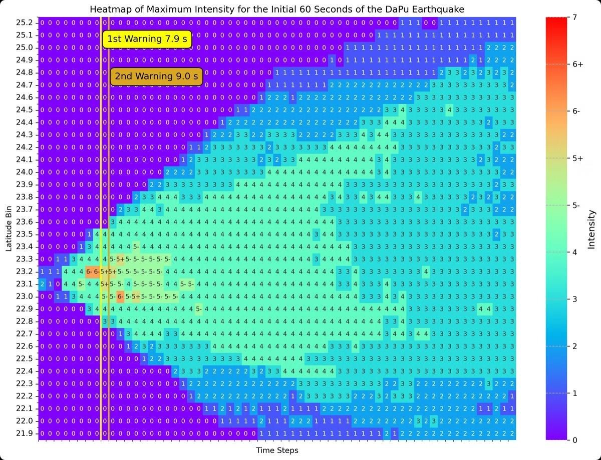
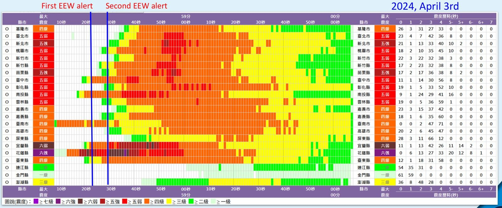
The rupture outran the estimate
- When
- Apr 3, 2024, 07:58 local time
- Earthquake
- ML 7.2, off the Hualien coast
- Final alert
- 14 s, 12 areas
- No alert
- Keelung, Taipei, New Taipei, Taoyuan, Hsinchu City and County, Miaoli
- Shaking
- New Taipei and Miaoli reached 5+; Hualien County stayed at 5− or above for 41 s
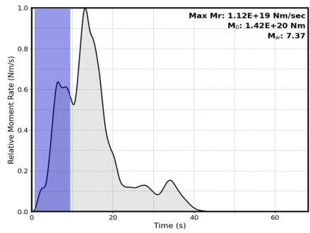
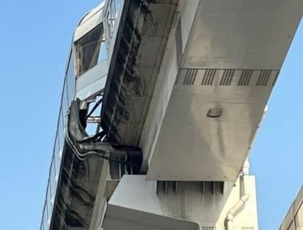
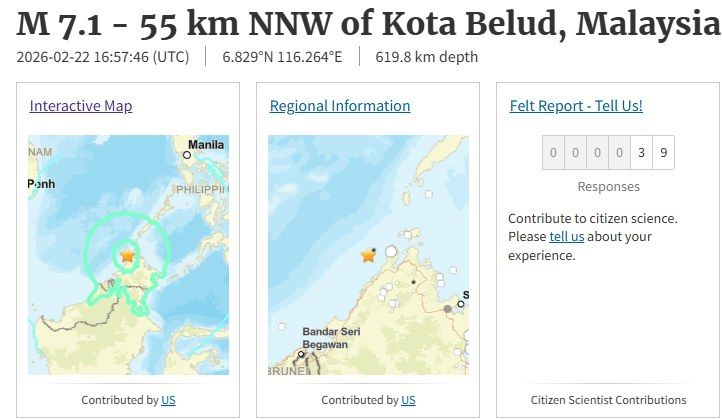
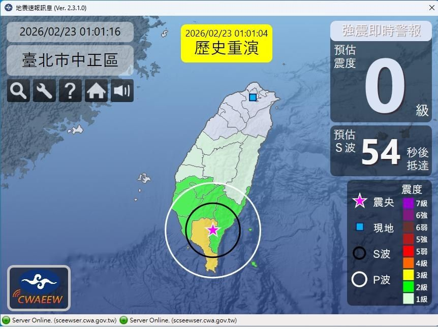
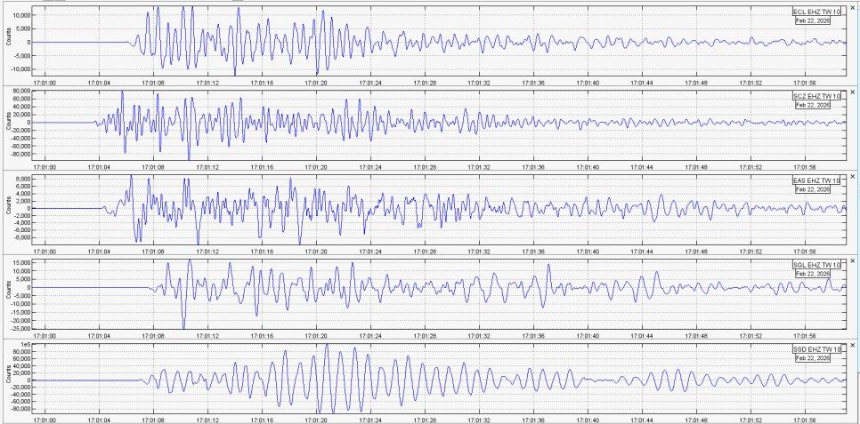
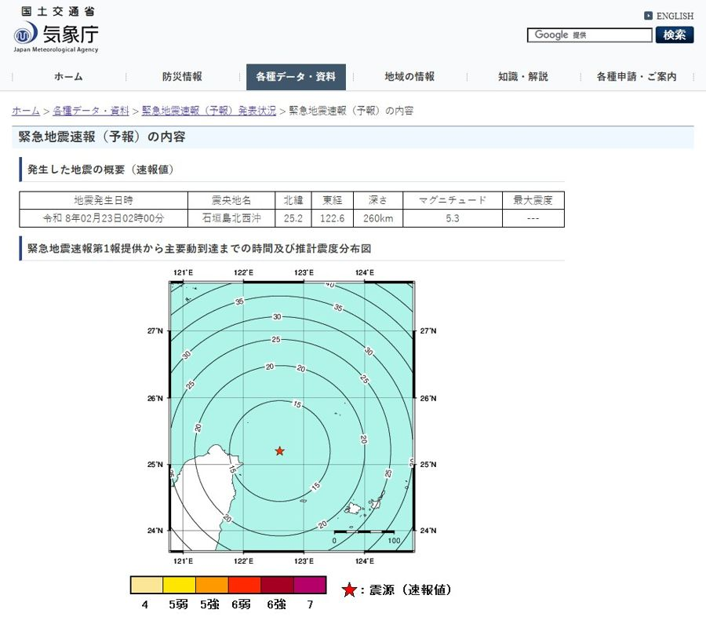
A false alert from 1,800 km away
- 00:57:46, Feb 23, 2026. An M7.1 earthquake strikes about 620 km beneath northern Borneo.
- About 3 minutes later. Its P waves reach Taiwan from below, almost at once across many stations.
- 01:01:14. The associator sees a local quake: M4.6, 10 km deep, at 22.66°N, 120.80°E.
- Result. M4.6 is above the 4.5 threshold for direct links, so schools got an alert. It is below 5.0, so phones did not.
What comes next
No single algorithm wins every earthquake. CWA now runs several engines side by side and is testing AI at every step, from picking waves to drafting reports.
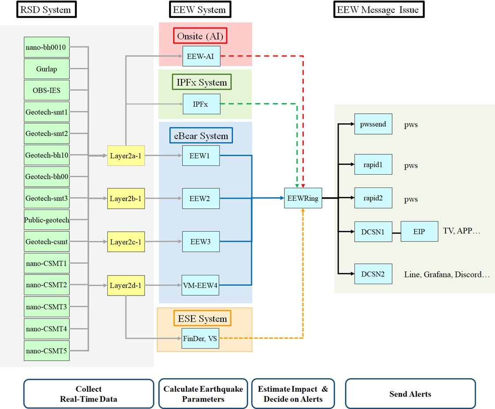
Many algorithms, one alert ring
Four instances of CWA's Earthworm-based eBEAR, the IPFx method, an on-site AI model, and FinDer and the Virtual Seismologist from ETH Zurich's SeisComP all read the same data and write to one alert ring that feeds phones, TV, direct links and apps.
Time until Taipei was alerted in a replay of the 2024 Hualien earthquake (Song et al., 2025); a shorter bar is faster.
FinDer models the rupture as a growing line instead of a point. The price: final alerts come later (25–26 s instead of 14 s), but they cover 16–17 areas instead of 12.
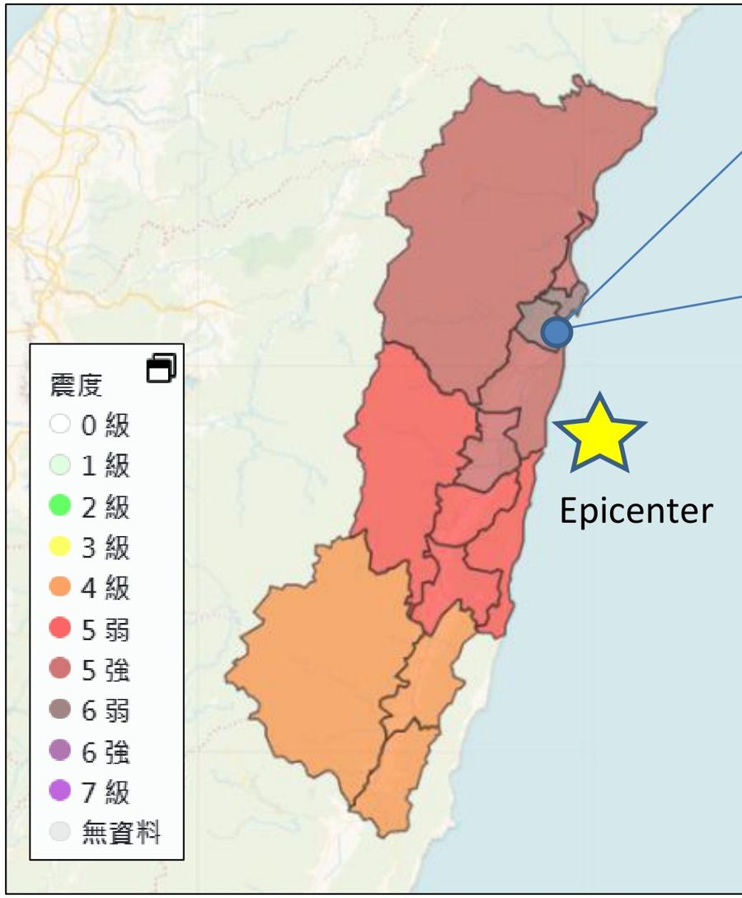
AI on site
A convolutional neural network looks at just 3 seconds of P wave at one station and asks: will the shaking here exceed 80 gal, roughly intensity 5? It doesn't wait for the network, so it helps close to the epicenter and supports township-level alerts (Chiang et al., 2022).
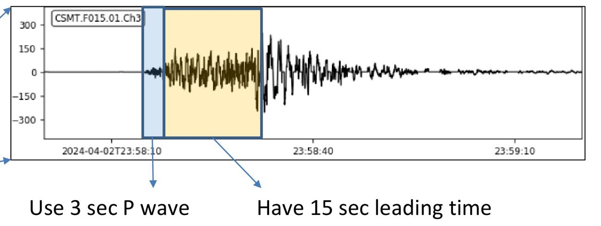
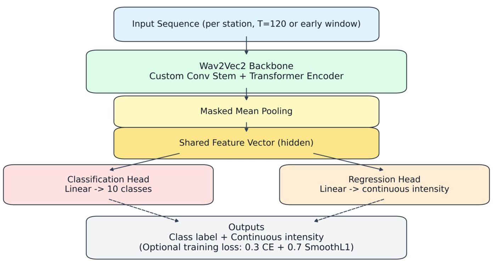
Learning from shaking that has already arrived
A Transformer borrowed from speech recognition reads each station's second-by-second observed intensity and predicts the final intensity class. The longer it watches, the better it gets: ideal for extending alerts to distant areas that a point-source estimate missed.
Alert threshold: intensity class 4 or above. Values read from the evaluation charts.
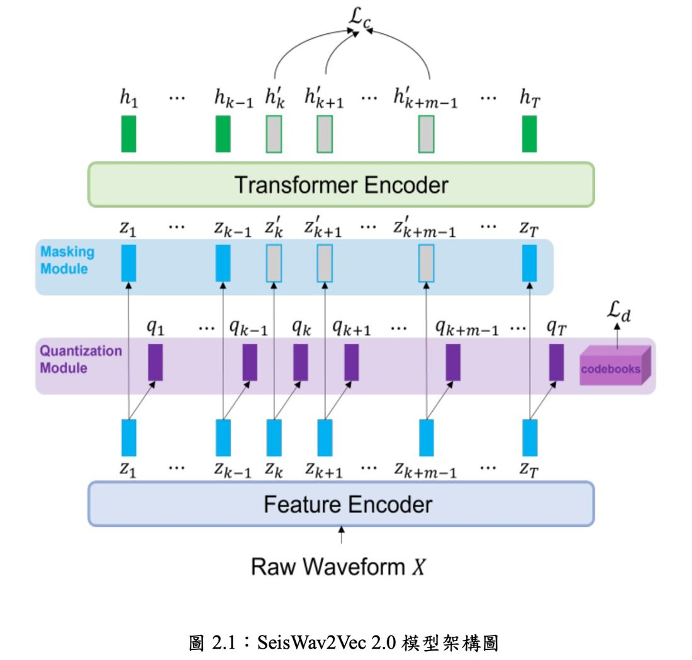
A Large Earthquake Model
Like a language model that learns from unlabeled text, SeisWav2Vec 2.0 learns from unlabeled waveforms through self-supervised, contrastive training, then is fine-tuned for a task such as picking P waves. The payoff shows when labels are scarce.
P-wave picking F1 on the test set. Labeled data: 1.42 million CWASN traces and 98,665 TSMIP traces.
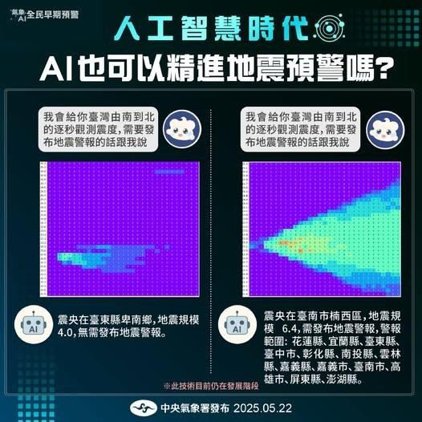
LLMs and AI agents
In an experiment, an LLM read the second-by-second intensity maps and decided whether to alert: no alert for an M4.0 in Taitung, an alert for 13 counties in the Dapu earthquake. It is still research. The vision is a team of AI agents supporting the duty seismologist:
- Station health:watches outages and latency and opens repair tickets.
- Event check:compares eBEAR, FinDer and AI results and flags conflicts, such as a distant teleseism.
- History:finds similar past earthquakes in seconds.
- Communication:drafts bilingual reports and press briefings.
Humans stay in the loop for every public message.
Test yourself
Six questions from the talk. Pick an answer to see why.
Data, code and further reading
Open data
Waveforms, the earthquake catalog and geophysical data are available from CWA's Geophysical Database Management System at gdms.cwa.gov.tw. Continuous waveforms appear about 15 minutes after real time.
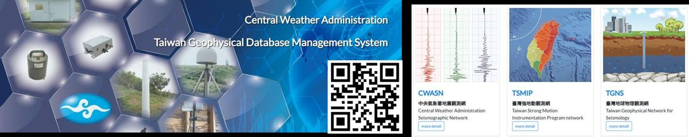
Run the engines
Replay earthquakes on your own computer with CWA's Earthworm-based EEW system or with SeisComP.
docker pull cwadayi/earthworm_ubuntu22.04_eew:v1docker pull cwadayi/seiscomp_ubuntu22.04Images on Docker Hub: earthworm_ubuntu22.04_eew and seiscomp_ubuntu22.04.
Studies cited
- Wu et al. (2000), Seismological Research Letters: the rapid reporting system during Chi-Chi.
- Wu et al. (2011): the 2010 Jiaxian earthquake.
- Kanamori et al. (2017): the 2016 Meinong earthquake.
- Chen et al. (2019): magnitude and intensity estimation for CWA's EEW.
- Wu et al. (2021): CWA's EEW data flow and channels.
- Chiang et al. (2022): on-site deep learning for strong shaking.
- Yamada and Chen (2022): the IPFx method.
- Song et al. (2025): FinDer and VS online tests in Taiwan.
- Su et al. (2025): the 2025 Dapu earthquake.